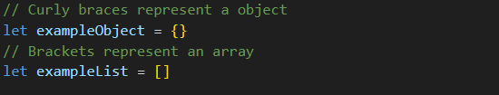

JavaScript is a versatile scripting language often referred to as
the "language of the internet." It plays a crucial role in web and
app development by enabling dynamic functionality. One of its
standout features is its ability to interact with the browser's
Document Object Model (DOM), which we will talk more about shortly.
JavaScript stands apart from HTML and CSS due to its unique role in
handling events and driving dynamic changes within web applications.
While it differs significantly from HTML and CSS, these three
technologies work together in harmony.
Throughout this crash-course intro to Javascript we are going to
liken the operation of javascript to our breakfast routines.
Programming languages, like your fridge, have different ways of
managing the flow of actions. Let's dive into how JavaScript handles
these "kitchen decisions."
First, What is "Control Flow"?
Control flow refers to the order in which individual statements,
instructions, or function calls in an imperative program are
executed or evaluated. In simpler terms, it's like reading a
book from left to right, top to bottom. Coding in JavaScript follows
a similar sequential logic. There's nothing inherently special about
the natural order in which the script is executed at face value.
Managing Flow
In JavaScript, we use control structures to influence the flow of
events in our applications. While it does read much the same as a
book- we employ 'conditionals' to selectively activate or prevent
sections of our script from running. This customization allows us to
adapt the script's behavior to specific use cases. In essence,
coding often boils down to a series of conditional statements, and
complex applications consist of thousands or even millions of these
conditions. This concept underlies what happens behind the scenes in various
domains, including games, scripting, data analysis, and web
development (backend).
Your Fridge's Control Flow
Imagine your fridge as a JavaScript program. Just like in coding,
your fridge makes decisions based on what's inside. Here's how
JavaScript's control flow mechanisms relate to your fridge:
Logical OR Operator (||): It's like checking if
there's orange juice or milk. You take the first available option.
Ternary Operator (?): Think of it as deciding
between a big glass and a small glass for your juice:
condition ? bigGlass : smallGlass.
if Statement: Just like opening your fridge to check if the milk
is expired. If it is, you buy a new one; otherwise, you use what's
there.
else Statement: When the juice is empty, you grab the milk
instead. It's your "Plan B."
Logical AND Operator (&&): Imagine
needing both milk and eggs to make pancakes. You'll only make them
if both items are available.
Comparison Operators: These are like checking if an item in the
fridge is fresh or expired, e.g., if (milk === 'fresh').
else if Clause: Sometimes you want pancakes if you have fresh eggs
or cereal if you don't. You have multiple options.
Truthy and Falsy Values: When you check if there's something in
the fridge, it can be either "truthy" (yes, there's something) or
"falsy" (nope, it's empty).
In your kitchen (or your code), these control flow mechanisms help
you make decisions based on what's in your fridge (or your program's
data). Just as you adapt your breakfast choices, your code adapts to
different scenarios, making it as versatile as your morning routine.
Arrays and Objects
Both JavaScript arrays and objects can be thought of as containers,
each with their own methods and operators unique to their respective
elements. Objects can be considered as variables that contain a
series of variables, maintaining a reference between both 'key' and
'index' values, where the key is linked to the index.
In contrast, arrays are containers that hold variables with no
relationship to each other beyond coexisting within the parent
array. Both objects and arrays serve common purposes in JavaScript
and have unique use cases.
Methods Unique to Objects
Objects in JavaScript have several methods that allow you to
manipulate and interact with their properties. Some common methods
for objects include:
Object.keys(obj): Returns an array of an object's own
property keys.
Object.values(obj): Returns an array of an object's
own property values.
Object.entries(obj): Returns an array of an object's
own property key-value pairs as arrays.
Methods Unique to Arrays
Arrays, on the other hand, come with their own set of methods
tailored for handling ordered collections of data. Some common
methods for arrays include:
array.push(item): Adds an item to the end of an
array.
array.pop(): Removes and returns the last item from
an array.
array.shift(): Removes and returns the first item
from an array.
array.unshift(item): Adds an item to the beginning of
an array.

Functions
JavaScript functions are essential pieces of code that empower
developers to define actions they want their scripts to perform.
They are commonly used to implement conditional statements and
manage the control flow of an application.
Functions are isolated blocks of code that remain dormant until they
are called or triggered by existing scripts. This might seem
counterintuitive at first—writing code that isn't always
executed—but it offers a highly customized user experience when
running our applications.
To illustrate, think of a function as a button in your kitchen:
Press This Button: Open the Fridge Door
When you press this button (call the function), it performs a
specific action—opening the fridge door. This action is executed
only when you want it to be, not every time you enter the kitchen.
Don't Press This Button: Don't Open the Fridge
On the other hand, when you don't press this button (don't call the
function), the fridge remains closed. The code for opening the
fridge door doesn't run unless you explicitly trigger it.
What is the DOM?
The DOM, or Document Object Model, is our link to the web as
developers. This is the robot we communicate with and engage when
creating dynamic web pages. The DOM sits atop what is referred to as
the browser runtime, watching and listening for commands or
instructions on what to do. It's almost like a personal assistant—it
renders and displays what we want to do on the browser. Want to
click a button? Look at a shopping cart? The DOM handles it all.
We cannot actively engage with the DOM through plain HTML or CSS.
Although HTML and CSS are still received as instructions on what to
render, due to the nature of these files, they don't have the
capability to listen and stay active in the same way JavaScript can.
Remember that section on control-flow? Well, we send a series of
instructions to the DOM depending on the current state of what the
user asks to display (initiating one of those dormant conditional
statements). This ultimately signals the DOM on what to do with the
current page that has been rendered.
An Analogy to Describe JavaScript and Its Relationship to HTML and CSS
JavaScript is fundamentally different from HTML and CSS, but it is
essential to highlight the common ground in which they all coexist
in the world of web development.
JavaScript, HTML, and CSS are all processed through the browser DOM,
and all are taken into consideration by the browser when displaying
a webpage. This is HUGE, and the outcomes are
marvelous!
Imagine that fridge once again: HTML would be the food—unmistakably
food. We cannot consume the fridge itself, and alone without food,
what would be the point of a fridge? CSS would be the fridge—it
makes food keep, it's palatable when you want to eat it within
reason, of course. Nonetheless, CSS is in most cases thought of as
an essential part of web development, much like in the case of
keeping food cold—one could liken CSS to a fridge to moderate the
temperature and keep food fresh.
Ah, and JavaScript. What else is left?
JavaScript is like the hinges that keep the door on. Want an ice
dispenser? JavaScript's got you covered. Thirsty? Maybe we also
dispense water as well. JavaScript is not essential, but it's darn
good to have at our disposal. And when it doesn't cost thousands of
dollars like a fancy fridge, wouldn't you be mad not to utilize
JavaScript?
One for the Road...
To summarize and keep the analogy of our morning breakfast routine
going, I want to emphasize the critical role of the DOM and the
browser runtime in web development.
Think of the DOM as the intricate machinery inside a
state-of-the-art smart fridge that regulates temperature, manages
food storage, and produces ice cubes. It continuously updates and
runs processes to ensure everything functions smoothly.
Now, when it comes to the browser runtime, it's like having a
highly skilled chef who is always ready to prepare your meals
on-demand.
Imagine you, as the user, walk into the kitchen (the webpage) and
request something specific, like wanting a fresh smoothie
(interacting with a web element). The chef (browser runtime)
immediately goes to work, selecting the best ingredients
(JavaScript code) and using various kitchen gadgets (browser
features) to prepare your request just the way you like it.
Unlike static appliances, the browser runtime is responsive and
acts upon user input and events on the webpage. It's more like a
highly skilled kitchen staff, always ready to create interactive
and dynamic web experiences as needed.
So, while the DOM and the browser runtime may not be as
straightforward as conventional appliances, they are the dynamic
heart of web development, orchestrating and executing actions that
bring web pages to life.